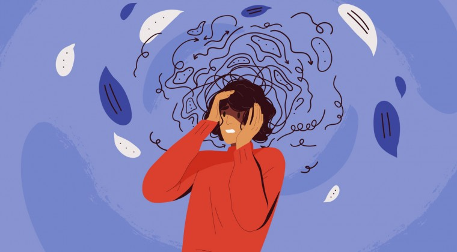

La depresión es un trastorno emocional que causa un sentimiento de tristeza constante y una pérdida de interés en realizar diferentes actividades. También denominada «trastorno depresivo mayor» o «depresión clínica», afecta los sentimientos, los pensamientos y el comportamiento de una persona, y puede causar una variedad de problemas físicos y emocionales. Es posible que tengas dificultades para realizar las actividades cotidianas y que, a veces, sientas que no vale la pena vivir.
| Depresión leve | Síntomas que afectan la capacidad diaria, pero no impiden el funcionamiento general. Puede experimentarse tristeza, falta de energía y problemas para dormir. |
| Depresión moderada | Síntomas más pronunciados que interfieren significativamente con la vida cotidiana. Pueden incluir sentimientos de desesperanza, pérdida de interés en actividades habituales y dificultades para concentrarse. |
| Depresión grave | Síntomas intensos que provocan una marcada incapacidad para llevar a cabo actividades diarias. Puede incluir pensamientos suicidas, cambios importantes en el peso y problemas cognitivos graves. |